Вітальня · журнал «ДентАрт» 2017 №2
Андреас Курбад: «Не хочу бути просто користувачем цифрових технологій, їх розвиток — мій інтерес»
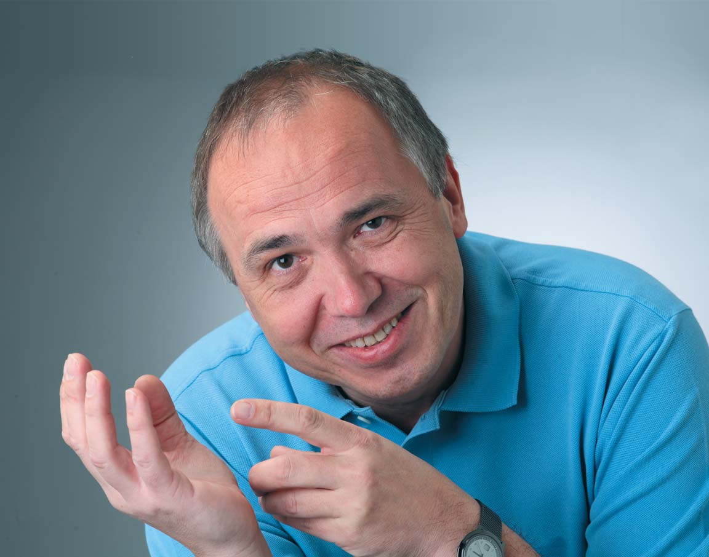
У цьому номері журналу «ДентАрт» у нас у Вітальні доктор Андреас Курбад, стоматолог із Німеччини, через руки якого пройшли всі покоління CEREC і який брав активну участь у створенні сучасного цифрового світу стоматології.
Ми зустрілися в Києві, в готелі «АльфаВіто», напередодні навчального курсу для українських стоматологів, організованого компанією «Дентсплай Сірона». Для Андреаса Курбада це був перший візит в Україну, а наша бесіда відбулася буквально через дві години після приземлення літака в Борисполі...
«Мені справді часто кажуть, що я комп'ютерний стоматолог»
— Доброго дня, Андреасе! Читачів нашого журналу завжди цікавить, як колеги, котрі стали відомими і знаменитими, прийшли в стоматологію... Як Ви стали стоматологом, що вплинуло на Ваш вибір нашої професії?
— Якщо чесно, то у мене не було вибору, тому що я народився в сім'ї стоматологів: мій дідусь був стоматологом, мій тато — стоматолог, і я гадаю, що вони б мене убили (сміється), якби я не став стоматологом. У мене не було шансів оволодіти іншою професією, крім стоматології, і, що найсмішніше, моя донька, будучи повністю вільною у виборі професії, також стала стоматологом. Це вже четверте покоління стоматологів у нашій родині, і сьогодні, після майже 40 років практики, я вважаю, що це було непогане рішення — стати стоматологом, успішним стоматологом...
— 25 років тому, коли Ви вирішили пов'язати свою стоматологічну кар'єру з цифровою стоматологією, не було ні цифрових телевізорів, ні смартфонів, ні електромобілів з автопілотом... Чому Ви звернули увагу на цифрові технології, CAD/CAM, і чому вибір припав саме на CEREC?
— Це сталося саме по собі... У той час, понад 25 років тому, я працював асистентом в університеті, робив епідеміологічні дослідження і сказав своєму керівникові, що для аналізу даних нам потрібен комп'ютер. Він відгукнувся на моє прохання, і ми отримали один комп'ютер Комодор 64, заплативши за нього купу грошей...
Тоді CAD/CAM систем ще не було, і нашою справою була тільки епідеміологічна статистика. З допомогою комп'ютера ми створили оригінальну програму для аналізу даних з епідеміології карієсу і захворювань періодонту. Я пам'ятаю, це були дані 6 тисяч пацієнтів, і тоді ми придумали теорію ризику, коли за даними стану періодонту в шести секстантах невеликої кількості обстежених можна було зробити висновки про середній рівень захворюваності всього населення у регіоні... Звідтоді і донині мені часто кажуть, що я справді комп'ютерний стоматолог!
Трохи пізніше на лекції мене запитали про лікаря з Франції, який робить коронки за допомогою цифрової камери. Чи вважаю я, що це може бути реальністю? Я відповів, що так, я вірю, хоча це, очевидно, буде можливим не зараз, а пізніше, тому що в той час для такої технології потрібно було укомплектувати комп'ютерами цілу кімнату, а сьогодні у смартфона більше обчислювальних можливостей, ніж у більшості комп'ютерів того часу.
Чесно кажучи, в той час я працював дуже багато і з цікавістю, тому що був зачарований реставрацією зубів з першого дня, як став стоматологом. Реставрації з композитних матеріалів тоді були поганими, коли ми порошок змішували зі смолою, і я вважав, що тільки з керамікою ми зможемо отримувати дуже красиві і довговічні реставрації, наприклад, керамічні мости за технологіями фірми VITA.
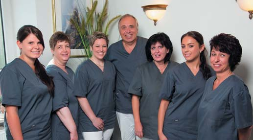
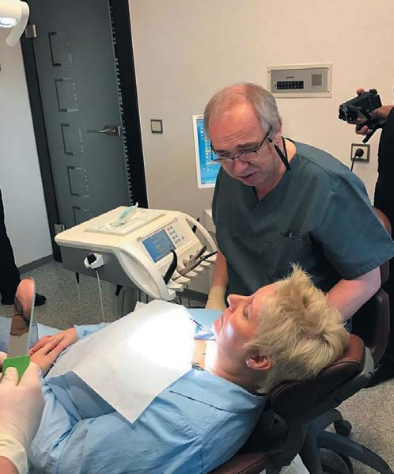
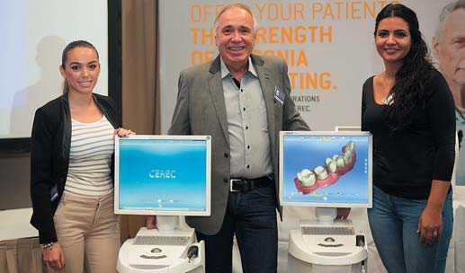
Будні успішного стоматолога Андреаса Курбада — напружені, але й щасливі!
Коли я побачив CEREC, то подумав, що це річ природна, в той час як мої колеги, котрих цікавила суто естетика, думали про CAD/CAM не дуже добре... Але коли я почав працювати з CEREC, то побачив у нього дуже великий потенціал... Спочатку в CAD/CAM технології потрібно було трохи попрактикуватися, і якщо будете дотримуватся цього правила, також зможете отримувати дуже красиві і надійні реставрації з CEREC, точно виконуючи технологічні вимоги.
«Пацієнти потребують реставрацій з досконалою оклюзійною поверхнею»
— Вважається, що традиційна «hand made» кераміка надає зубному техніку і стоматологу більше можливостей у створенні персоналізованих реставрацій, насичених нюансами форми і кольору... Чи це помилка? Наскільки Ваші пацієнти сприймають CAD/CAM керамічні реставрації?
— Я вважаю, що деталі керамічних реставрацій ручної роботи, наприклад, на платиновій фользі, — це найпрекрасніше у реставраційній стоматології. І донині мене захоплює кераміка, прозора, як крапля води! Естетика керамічної реставрації чудова, але з другого боку, в кераміці ручної роботи можуть бути дефекти, яких важко уникнути. Коли раніше я виходив з лабораторії, технік просив мене випадково не зламати реставрацію, бо можуть з'явитися тріщини...
Можливо, сьогодні є невелика спільнота, яка дотримується такої практики, вони працюватимуть над деталями ручної кераміки довго й терпляче, і я їх розумію. Але нині ми маємо набагато більшу потребу у простих реставраціях, ніж у всіх керамічних реставраціях ручної роботи в минулому.
Сьогодні все більше і більше людей потребують реставрації зубів, і це змушує говорити про нові вимоги до стоматології. Вважаю, що з коронками пов'язана велика помилка: з одного боку, нам потрібно набагато більше цих керамічних реставрацій, ніж ми можемо виконати традиційними технологіями, а з другого боку, ми маємо потребу в отриманні досконалої оклюзійної поверхні. І з CAD/CAM технологіями усього цього можна досягти!
Що ж до естетики, то сьогодні ми маємо багато матеріалів і можливостей у цифровому дизайні: різниця в ручній і цифровій реставраціях є, але в більшості випадків без видимих відмінностей. Моїм пацієнтам подобаються CAD/CAM реставрації! Це естетично, і ми можемо виконати їх простим способом за дуже короткий час.
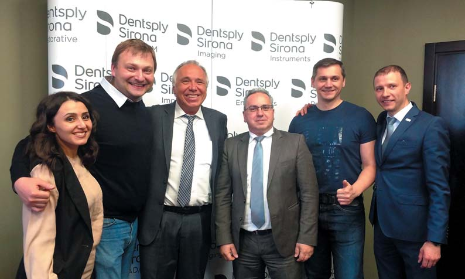
«Наступне покоління стоматологів і великі конгреси проводитиме онлайн»
— Як міжнародний лектор і тренер, Ви виступаєте у багатьох країнах на різних континентах... Чи відчуваєте Ви різницю між стоматологами різних країн у сприйнятті і використанні цифрових технологій, чи глобалізація стирає всі межі?
— Ні, я вважаю, це питання економіки, тому що в деяких країнах можна бути успішним у традиційних аналогових технологіях реставрації завдяки їх низькій ціні. І це чиста економіка, коли стоматолог повинен вибрати: придбати йому CAD/CAM систему за 100 тисяч євро чи платити лабораторії по 40 євро за кожну коронку... У всіх країнах цифрові технології будуть дорогими! Щоправда, стоматолог не може виготовляти реставрації з діоксиду цирконію з допомогою цифрової технології. Це неможливо!
Я гадаю, що CAD/CAM реставрації будуть дорогими у всіх країнах, але, повертаючись до питання про економіку, вважаю, що існує велика різниця між різними країнами, і це залежить від їх соціального та економічного розвитку.
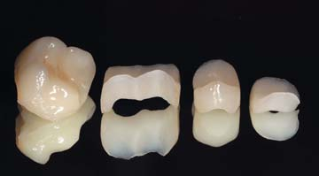
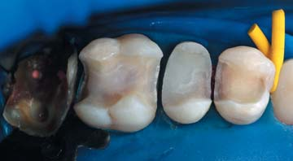
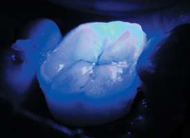
— Ви берете участь у редагуванні трьох міжнародних фахових журналів, присвячених цілком або частково цифровим технологіям. Ці журнали читачі отримують не лише в цифровому, але і в традиційному паперовому вигляді (наприклад, це можна було побачити на останній IDS у Кельні)... Як Ви вважаєте, коли стоматологи перестануть купувати журнали, надруковані на папері?
— Я гадаю, що це питання до читачів... У клініці ми отримуємо більше десяти друкованих журналів на місяць, і, наприклад, якщо ви передплачуєте «Квінтесенцію», міжнародний щорічний журнал із цифрової стоматології, то автоматично отримуєте доступ до змісту журналу онлайн. Так само і з книгами... Можна читати електронну книгу, але не менш важливо мати друковану версію. Щоправда, коли я готую огляд літератури, то ніколи не використовую папір, а користуюся пошуком онлайн за ключовими словами.
Отже, для мене друковані журнал, книга — це передусім питання культури, традиції, але скажу вам точно, що наступне покоління цілком змінить це співвідношення... У моєї дочки немає портативного комп'ютера, вона робить усе за допомогою смартфона. Питаю її, як ти можеш це робити? А вона відповідає, що їй просто не потрібен комп'ютер!
Торік я почав працювати над веб-сайтом, присвяченим CEREC, і відразу ж став готувати його для роботи онлайн. Тому що, як я гадаю, наступне покоління стоматологів не літатиме на великі конгреси, їм не буде потрібна особиста присутність де-небудь, якщо вони зможуть брати участь у конгресах віртуально. Незважаючи на це, вони зможуть керувати світом, створюючи більше, ніж ми, з допомогою телефону і цифрових технологій.
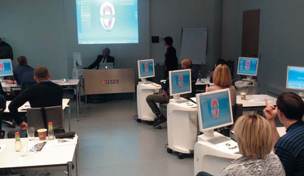
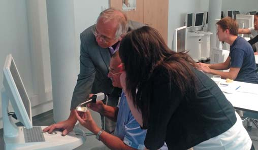
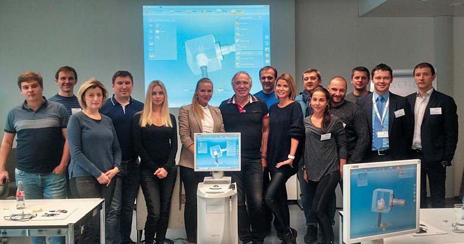
Стоматологи з України, Вірменії та Білорусі після CEREC-тренінгу у Дентальній Академії Дентсплай Сірона. Листопад 2016 року, Бенсхайм, Німеччина.
«Стоматологія — це робота для людей, які вміють робити деякі маленькі речі своїми руками»
— Коли цифрова машина робить усе за стоматолога і йому залишається тільки вставити реставрацію в зуб, що відновлюється, стоматолог стає трохи схожим на водія автомобіля з автопілотом... У Вас не виникає бажання зробити якусь реставрацію замість CEREC своїми руками?
— Звичайно, ні... Технології CEREC цифрові, і коли ваші руки вільні, це дає вам можливість сфокусуватися на клінічній роботі. Тому особисто я сам не сканую зуби і не проектую реставрації. Як лікар, я лише обстежую пацієнта, ставлю діагноз, препарую зуби, а далі починається робота «для дівчат» (сміється)... Мені залишається тільки зафіксувати готові реставрації на зубах.
І все ж таки стоматологія, на мій погляд, — це робота для людей, які вміють робити деякі маленькі речі своїми руками! Уже 7 років я працюю викладачем в університеті і деяким студентам кажу, що, можливо, їм слід звернути увагу на іншу професію... Це не означає, що стоматологія — погано для них, але протягом цілого життя вони ніколи не матимуть відчуття успіху, і напевно, їм більше підходить суто розумова робота, а не робота руками.
— Дизайн Вашої затишної стоматологічної практики витриманий в стилі Hi-Tech, в мінімалізмі, і це вдало гармонує із сучасним дизайном обладнання Сірона. Але в кожному лікувальному кабінеті пацієнт несподівано зустрічає дзеркало в позолоченій рамі, що було сучасно років сто тому... І це єдина така деталь в інтер'єрі! З чим це пов'язано?
— І не тільки це! У кожному кабінеті у нас є велика картина... Минулого місяця у мене була група стоматологів з Росії, і якщо ви подивитеся їхні публікації у Фейсбуці, то там скрізь картини одного російського художника — Івана Шишкіна. Мені просто подобаються картини Шишкіна, тому що я народився в маленькому містечку і у мене сформувалися дуже близькі стосунки з природою...
Коли я приходжу в яку-небудь клініку, там у вікні зазвичай видніється неоновий силует моляра, який вказує перехожим, що тут працює стоматолог, і зображення зубів там скрізь. Я переконаний, що пацієнт, приходячи до стоматолога, не повинен бачити якісь зуби. Пацієнтові, навпаки, потрібно розслабитися і забути, що він у клініці!
Але з дзеркалом є й інша причина... Ми фокусуємося на естетиці, і коли реставрація завершена, пацієнти зазвичай хочуть подивитися, який вигляд мають зуби після реставрації. Тоді я кажу їм: «Дивіться, ось дзеркало!» Погляд на себе з відстані дуже важливий, добре це чи ні, тому що ніхто не буде дивитися на ваші зуби окремо, а буде дивитися на вас, на вашу усмішку в цілому. Ось тому ми не даємо пацієнтам дзеркала в крісло, а пропонуємо подивитися на себе у велике дзеркало, яке справді є в кожному кабінеті... Велике дзеркало показує, наскільки вам подобається ваша усмішка з реставрованими зубами, а не самі зуби.
«Музей CEREC у мене вже є!»
— За чверть століття CEREC пройшов через чотири покоління поліпшень і вдосконалення. Чи всі ці покоління пройшли через Ваші руки, чим Ви особисто допомогли розвиткові CAD/CAM технологій? І чи можна у Вашій практиці вже зробити музей CEREC?
— Я гадаю, що так, музей у мене вже є! Під час виставки в Кельні я бачив, що на стендах «Дентсплай Сірона» було багато відвідувачів, до цього вони відвідували мою клініку, і це здорово. У клініці зберігається перший CEREC, маленька фрезерувальна машина, яку тепер можна побачити тільки на картинках! Можливо, я романтик, але я ніколи не продавав і не викидав електронні пристрої, що відслужили, у мене багато таких речей. Це моє дуже особисте, і напевно, ми зможемо відкрити музей CAD/CAM і CEREC.
Я справді мав вплив на розвиток CAD/CAM технологій. Ви знаєте професора Вернера Мермана, винахідника CEREC, і ось коли з'явився CEREC 3D, то лише дві людини у світі мали програмне забезпечення для роботи з ним, це професор Мерман і я. Таким чином, у мене був шанс запропонувати деякі ідеї для розвитку технології CEREC.
Наступного місяця мені виповниться 60 років, і дехто запитує мене, чи не пора відпочити? Звичайно, вже настав час зробити це, але я не можу зупинитися в момент, коли все так цікаво і розвивається дуже швидко! Я повинен знати, яким буде наступний крок у розвитку цифрових технологій, тому що не хочу бути просто користувачем, а хочу брати активну участь у цьому.
— Що Ви любите майструвати своїми руками, окрім керамічних CAD/CAM реставрацій?
— Я люблю готувати їжу! Без цифрових технологій, звичайно (сміється), лише своїми руками, використовуючи гарні і свіжі продукти. Багато людей кажуть мені, що я можу відкрити свій ресторан, оскільки у мене є трохи таланту до кулінарії. Мені подобається багато моментів у приготуванні їжі, але головне, що після того, як я щось приготую, люди сідають разом зі мною поїсти і, запевняю вас, ми розслабляємося, як ніколи. Це один з найкращих способів відпочинку!
Чи знаю я українську кухню, українські страви? Це мій перший приїзд в Україну, тому завтра скуштую!
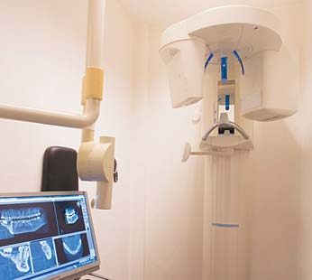
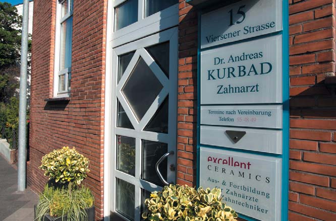
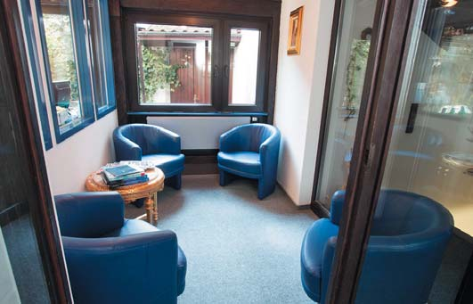
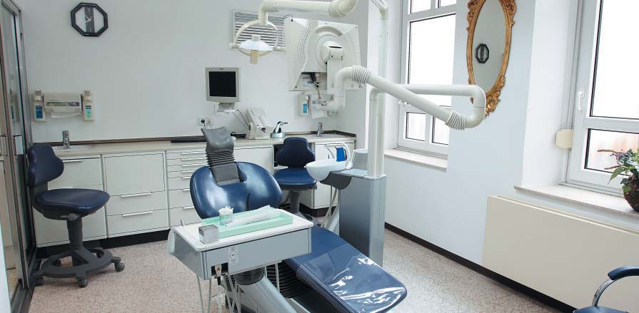
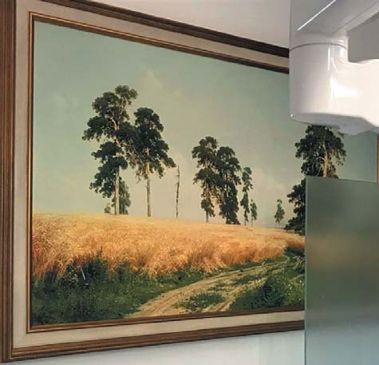
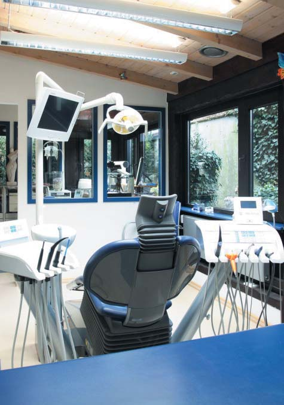
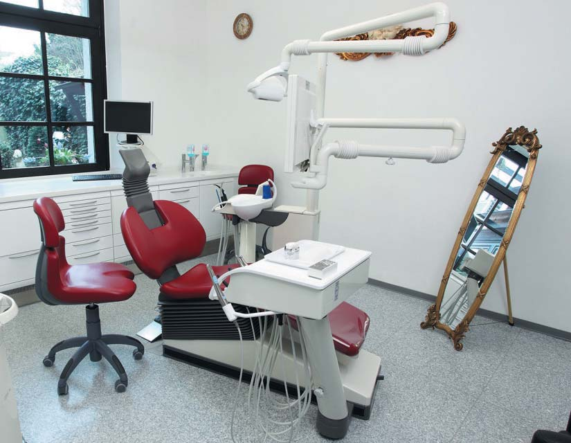
— Яке місце займають цифрові технології у Вашій сім'ї, у побуті? Чи на роботі життя цифрове, а вдома аналогове, для душі?..
— Звичайно, у повсякденному житті я не можу уявити собі, що щось може відбуватися без цифрових технологій. Наприклад, я можу взяти телефон і подивитися свій маршрут додому з будь-якого міста світу. Цифрові технології — це дуже добре, в цьому є сенс, вони роблять наше життя легшим.
— І на завершення інтерв'ю наше традиційне запитання: що б Ви побажали в аналоговому і цифровому форматі читачам «ДентАрту»?
— Пряма реставрація — це непогана річ, я не думаю про неї погано. Але, як я вже казав, усе залежить від фінансової та соціальної ситуації. Інша річ, що, пропрацювавши в стоматології близько 40 років, можу стверджувати, що це важка робота. Деякі з наших пацієнтів можуть створювати нам проблеми, вони саме такі, які є... Ви повинні прийняти 50 пацієнтів за день, 49 з яких вас люблять, вони довіряють вам, і ви для них найкращий лікар у всьому світі! Але є один, біль якого стає вашим болем...
Я бажаю, щоб у всіх стоматологів були знання і можливості знайти тих пацієнтів, яким вони справді зможуть допомогти, і рішучість сказати пацієнтові, що, вибачте, я не той, хто Вам потрібен... Це справді дуже важко — після 40 років практики сказати, що я не ваш стоматолог і вам варто пошукати іншого лікаря... Але я хочу бути успішним стоматологом ще до початку лікування! І це моє побажання для кожного!
Бажаю всім колегам відчувати ввечері, що день минув недаремно, а якщо у вас був щасливий, успішний день, то не має значення, з чим ви працювали: аналогами чи цифрою, композитами, керамікою чи імплантатами... Головне, що кінець кожного дня має бути щасливим, і це принципово!
— Дякую за інтерв'ю! І щасливих Вам днів!
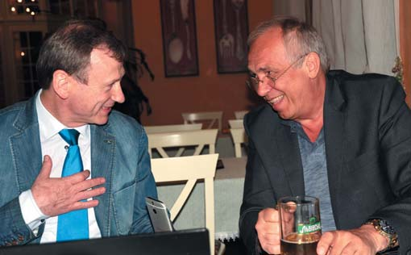
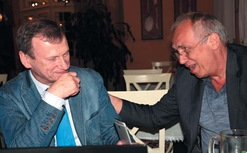
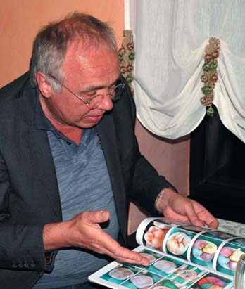
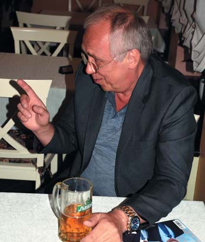
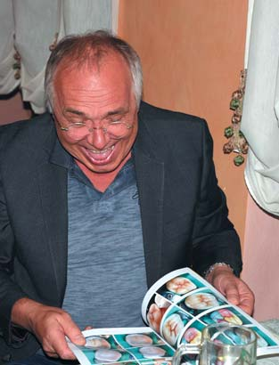
— Пряма реставрація в аналоговому вигляді? Ні-ні! Цифровий CAD/CAM зробить усе швидше і краще…
Розмовляв Сергій Радлінський
Фото з архіву Андреаса Курбада